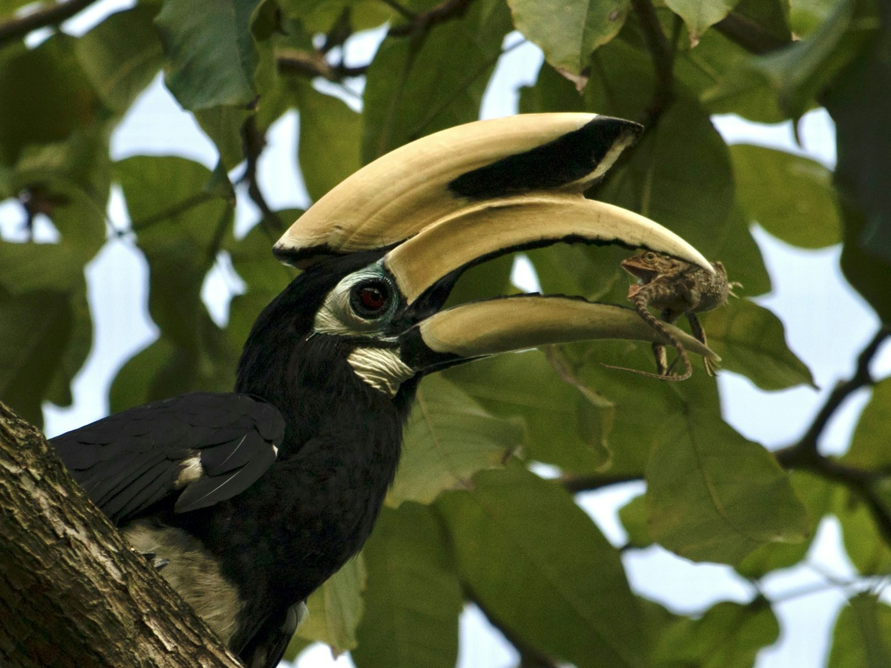
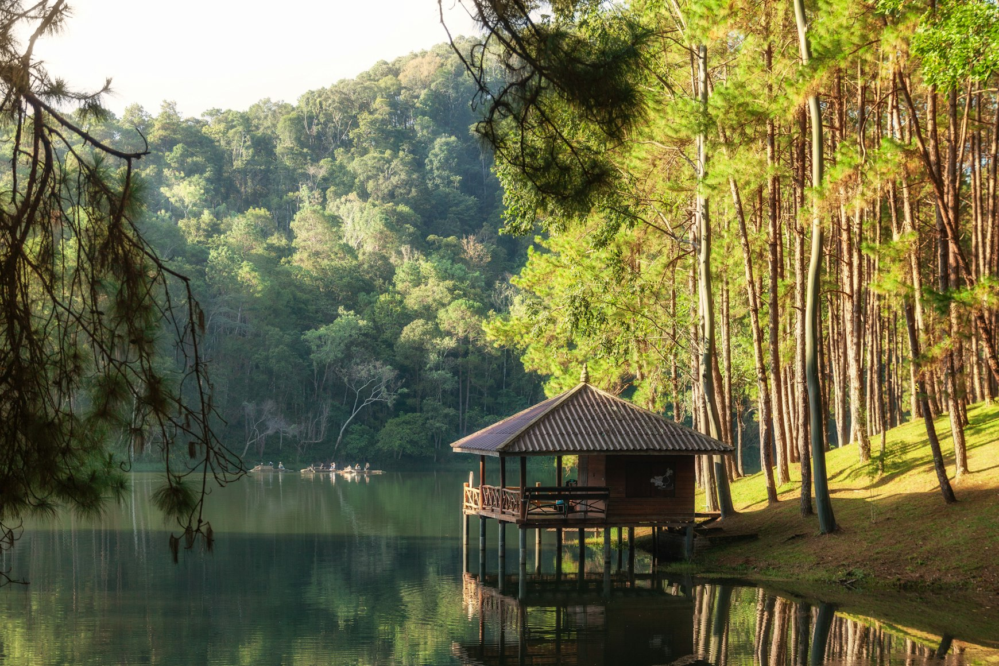

Most people imagine Thailand through crowded beaches, island parties, noisy streets in Bangkok, and endless night markets. But once you move slightly beyond the country’s tourist rhythm, Thailand begins to feel completely different. Slower. Quieter. Greener.
Mornings begin not with music from bars, but with the calls of Asian koels, drongos, kingfishers, and parrots moving between trees. Lakes remain still before sunrise. Long-tailed macaques sit on mangrove roots. Raptors circle above limestone cliffs.
Gradually it becomes obvious why birdwatchers return to Thailand again and again: here, observing birds does not require extreme expeditions into remote wilderness. Birds are woven naturally into daily life.
Thailand works exceptionally well for a calm two-week birdwatching holiday because the country combines comfort, reliable infrastructure, gentle travel conditions, tropical landscapes, and genuine biodiversity without forcing travellers into difficult logistics.
More than one thousand bird species have been recorded here, and even a relaxed trip can easily produce dozens of memorable sightings.
The key is choosing the right region.
For two weeks, Thailand works best either as a slow journey focused on one area, or as a combination of two very different ecosystems. Usually the second option becomes more rewarding: southern Thailand offers tropical lakes, rainforest, and coastal birds, while the north introduces mountain forests, cooler temperatures, and an entirely different atmosphere.
Option One: Southern Thailand — Khao Sok and the Krabi Coast
This is the best route for travellers who want deep relaxation without constant movement.
Southern Thailand allows birdwatching to become part of everyday life rather than a separate activity. You are surrounded by nature almost constantly. Even walking between your hotel and breakfast can turn into a morning of bird observations.

The heart of this route is Khao Sok National Park, one of the oldest tropical rainforests in Southeast Asia. The landscape feels almost prehistoric: limestone karsts rising above jungle canopy, mist drifting across Cheow Lan Lake, massive trees, humid forest air, and birds moving continuously through the upper canopy.
Which Birds You Can See
Southern Thailand is especially famous for hornbills, some of the most visually striking birds in Asia. The region offers excellent chances to see oriental pied hornbills and rhinoceros hornbills in the wild.
Beyond hornbills, travellers regularly encounter kingfishers, bee-eaters, drongos, broadbills, sunbirds, white-bellied sea eagles, hanging parrots, and green pigeons.
Hornbills are particularly memorable early in the morning. Their wings create a deep rushing sound while flying above the forest canopy. Often you hear them before you see them.
What To Do Besides Birdwatching
One of the biggest misconceptions about Khao Sok is that it only suits travellers interested in difficult jungle trekking. In reality, the region works beautifully as a slow travel destination.
Cheow Lan Lake becomes the emotional center of the journey. Most tourists arrive only for a rushed day trip, but staying several nights in a floating bungalow changes the experience completely. Early mornings are calm and almost silent. Longtail boats move slowly across still water while birds gather along the forest edges.
Days here naturally become slower: boat trips across the lake, reading on wooden terraces surrounded by rainforest, short jungle walks, watching gibbons in the trees, kayaking, spa treatments in jungle lodges, and long dinners overlooking limestone cliffs.
After several days in Khao Sok, the journey works well with a transition toward Krabi and the quieter sections of the Andaman coast.
Why Krabi Pairs So Well With Birdwatching
Krabi creates an important contrast after the rainforest. The landscape opens toward the sea, mangrove forests, tidal flats, and coastal birdlife.
Common sightings include collared kingfishers, white-bellied sea eagles, herons and egrets, brahminy kites, sandpipers, and other shorebirds.
The mangrove systems around Krabi are especially rich in wildlife. Quiet boat rides through these channels feel very different from the fast-moving island tours that dominate much of southern Thailand tourism.
At the same time, the region remains highly comfortable for longer stays: warm sea water, peaceful beaches away from crowded areas, good accommodation, excellent food, and enough infrastructure to travel slowly without sacrificing comfort.
Option Two: Northern Thailand — Chiang Mai and Doi Inthanon
If southern Thailand feels tropical and humid, northern Thailand introduces a completely different rhythm. The air becomes cooler and drier. Mountain forests replace mangroves and coastlines.
The center of northern birdwatching is Doi Inthanon National Park, Thailand’s highest mountain.
Northern Thailand attracts birdwatchers less through dramatic tropical spectacle and more through diversity, atmosphere, and calm forest observation.
In Doi Inthanon it becomes possible to see green-tailed sunbirds, laughingthrushes, minivets, barbets, woodpeckers, mountain hawk-eagles, leafbirds, and sibias.
Some birders travel here specifically for highly localized mountain species.
But even travellers without serious birdwatching experience often end up preferring northern Thailand simply as a place to live slowly for a while. Mornings feel cool and fresh. Roads wind through forests and mountains. Cafés overlook valleys and rice fields. Small lodges sit quietly between trees.
What To Do Besides Birdwatching in the North
Northern Thailand works extremely well for slow travel.
Around Chiang Mai it becomes easy to spend entire days without feeling pressure to “do tourism.”
The region naturally combines mountain drives, botanical gardens, tea plantations, hot springs, forest cafés, small lakes, and quiet villages in the northern provinces.
Chiang Mai itself remains one of the easiest long-stay cities in Thailand thanks to its calmer rhythm, strong food culture, green surroundings, and significantly lower humidity compared to the south.
Can You See Parrots in Thailand?
Yes, although Thailand is very different from countries like Bolivia or Peru.
Thailand is not famous for giant macaws. The parrots here are usually smaller, faster, and less visually dominant in the landscape. But seeing wild parrots is still entirely realistic.
Common species include vernal hanging parrots, blossom-headed parakeets, red-breasted parakeets, and alexandrine parakeets.
The best chances usually come in southern rainforest areas and certain mountain regions in the north near national parks.
What makes Thailand special is that birdwatching rarely revolves around chasing one target species. Instead, the experience grows from constant immersion in a living tropical environment where birds remain present throughout the entire journey.
How To Structure Two Weeks
The most balanced itinerary usually begins with southern Thailand: five or six nights near Khao Sok, followed by three or four nights in Krabi or a quieter coastal area.
This version works especially well for travellers who want lakes, tropical rainforest, warm sea air, and deep relaxation.
Week two can shift north with a short domestic flight to Chiang Mai, followed by six or seven nights divided between Chiang Mai and Doi Inthanon.
This combination creates two entirely different ecosystems without making the trip feel rushed.
When To Visit
The best period for birdwatching in Thailand is usually November through February.
During these months, rainfall becomes lower, temperatures remain comfortable, some migratory species are present, mountain visibility improves, and extreme heat becomes less intense.
Northern Thailand feels especially pleasant in December and January, when mornings can even feel cool.
Southern Thailand is best avoided during peak monsoon periods, particularly on certain coasts during October.
Do You Need a Birdwatching Guide?
If the goal is finding rare species, a local guide can be extremely valuable.
Tropical forests function differently from European landscapes. Birds are often heard long before they are visible. Experienced local guides recognize calls, feeding trees, seasonal movement patterns, and active observation areas.
But for a relaxed travel-focused journey, full-time guiding is not essential. Thailand offers abundant birdlife even during completely ordinary moments.
A good compromise is booking several early morning birding sessions while spending the rest of the trip independently.
Where To Stay
Accommodation matters enormously for this kind of journey.

In Khao Sok, location is often more important than luxury level. A simple wooden bungalow beside rainforest can create a far stronger sense of place than a polished international resort.
In Krabi, quieter coastal sections work much better than heavily developed tourist beaches.
In northern Thailand, small mountain lodges overlooking forest or rice fields often become the highlight of the trip itself.
Why Thailand Works So Well for Gentle Birdwatching
Many famous birdwatching destinations around the world require difficult logistics, physically demanding travel, or expedition-style conditions. Thailand operates differently.
Here, it is entirely possible to watch hornbills at sunrise, drink excellent coffee in the afternoon, enjoy a massage in the evening, and sleep comfortably in an air-conditioned room without losing contact with real tropical nature.
That balance is precisely what makes Thailand so effective for travellers who are not trying to “collect species,” but instead want to spend two quiet weeks inside a living tropical landscape.
Eventually you begin noticing details that previously disappeared into the background: how forest sounds shift before rain arrives, how different birds occupy different layers of the jungle, how kingfishers remain perfectly motionless above water before suddenly disappearing into reflections on the lake.
At some point, birdwatching stops feeling like a separate activity.
It simply becomes a different way of paying attention to the country.